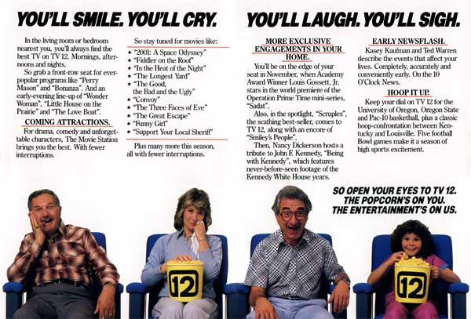
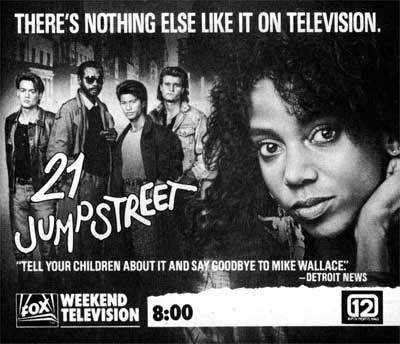
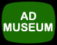

KPTV Ad Museum/1980-1989
A look back at print advertising from newspapers,
magazines, flyers, posters and TV Guide.
|
|
KPTV Sales Ad, 1980s
Another in a long line of sales ads to be given to prospective clients,
or to children who would appear on "The Ramblin' Rod Show." Throughout
the 1980s, Rod Anders was still KPTV's biggest star, the favorite of children
and adults alike. |
|
 |
TV
Guide,
September
25,
1983
In
the
fall
of
1983,
KPTV
rolled
out
a
new
campaign
titled,
"The
Entertainment's
on
Us!,"
complete
with
new
graphics
and
music,
and
this
two-page
color
ad
in
TV
Guide. |
|
|
TV Guide, October 31, 1985
Throughout the 1980s, KPTV's "The Movie" (Monday-Friday
8:00-10:00pm) continued to pull large audiences with classic movies, such as
"Dirty Harry," which lured viewers away from first-run network shows. |
|
|
TV Guide,
September 21, 1987
In the mid-1980s, NBC's powerhouse Thursday line-up of "The
Cosby Show," "Family Ties," "Cheers" and
"Night Court" dominated the ratings. KPTV acquired the rights to
three of those four programs (KGW [8] grabbed "Cosby" for big
bucks). KPTV's purchases performed well, and ran for many years.
"Cosby" foundered, never pulling the gigantic audience in
syndication that it did on the network.
|
|
 |
TV Guide,
September 27, 1987
Joining the new FOX network in October, 1986, KPTV began
telecasting prime-time programs on Saturdays and Sunday in April of 1986.
The Saturday schedule was soon pre-empted due to weak shows. The Sunday
entries, such as "21 Jump Street," performed marginally better.
However, KPTV chose to delay the broadcasts by one hour, airing
"21" at 8:00, when the show ran nationally at 7:00.
|
ON
TO THE 1990s...
 
This
page
last
updated
on
August 17, 2025 |